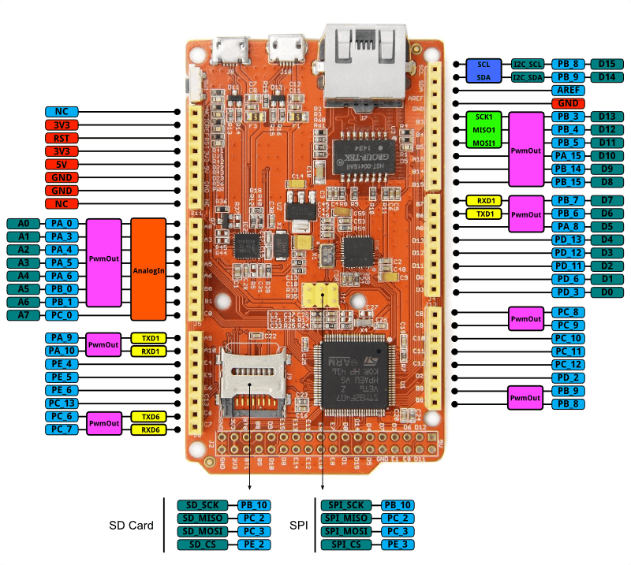
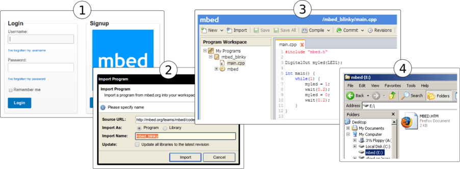

The Arch Max is an mbed enabled development board for rapid prototyping. It's based on a STM32F407VET6 microcontroller with an ARM Cortex-M4F core running at 168MHz. It includes an open link to provide SWD debug, drag-n-drop programming and USB serial communication.
| Item | Typical |
|---|---|
| Work Voltage | 5V |
| Microcontroller | STM32F407VET6 |
| Flash Memory | 512kB |
| RAM | 192kB |
| UART | 4 |
| I2C | 3 |
| SPI | 3 |
| CAN | 2 |
| SDIO | 1 |
| Camera interface | 1 |
| Eth | 1 |
| ADC Channels | 8 |
| I/O pins | 40 |
| Digital I/O Max Input Voltage | 5.0V |
| Diameter | 90mm x 44mm |


You can open main.cpp to change the program. For example, use the following code to blink the LED every 0.1s
#include "mbed.h"
DigitalOut led(LED1); // on-board led is connected to D13
int main()
{
while (true) {
led = !led;
wait(0.1);
}
}
To enable SWD debug or to get debug message through USB Virtual serial, please install the driver from mbed.
The latest firmware version for the Arch Max is v0203 built at Oct 8 2014. To check your firmware version and built date, open the MBED.HTM file of your MBED disk in a text editor.
The firmware v0203 2014-10-08 for Arch Max
| Name | Version | Note |
|---|---|---|
| Arch Max v1.0 | v1.0 | 5V power supplier didn't connect to USB power, user should connect to ext-power |
| Arch Max v1.1 | v1.1 | 5V power supplier can connect to USB power |